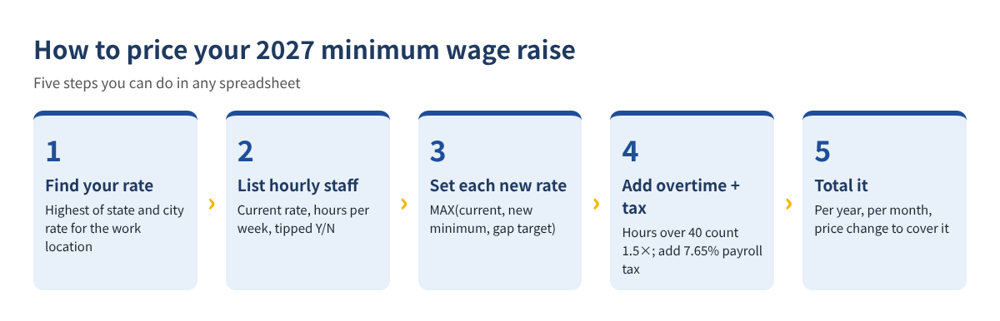
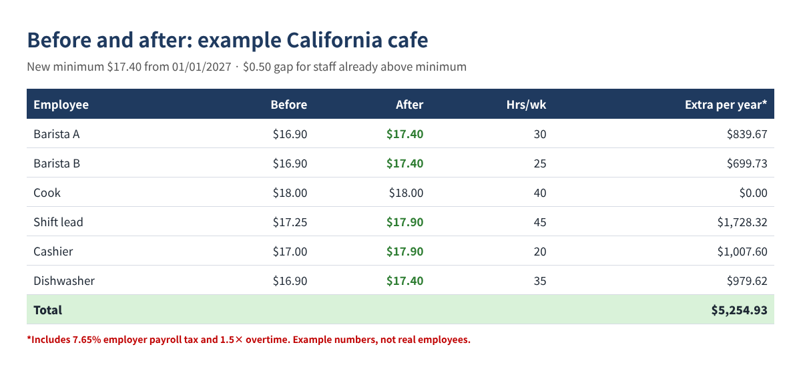
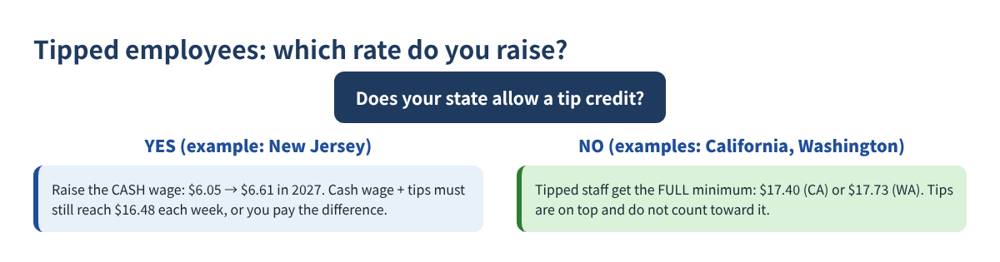
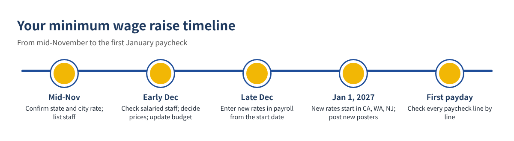

2027 Minimum Wage Increase: How to Calculate What It Will Really Cost Your Small Business
↓ Get the free Excel + PDF kit for this article
On January 1, 2027, the minimum wage goes up again in several states. California moves to $17.40 an hour, Washington to $17.73 and New Jersey to $16.48. If you run a cafe, restaurant, salon, dry cleaner or shop with hourly staff, the question is not just "what is the new rate?" It is "how much more will payroll cost me next year, and do I need to raise prices?"
Most owners guess. They multiply the raise by 40 hours and stop there. That misses overtime, the employer's payroll tax on the extra wages, tipped staff rules, salaried managers who fall below the new exempt salary line, and the senior employee who now earns almost the same as a new hire. This guide walks through a method you can do yourself in Excel or Google Sheets in about 30 minutes.
Step 1: Find the rate that applies to your location
Your rate is the highest of the federal, state and local (city or county) minimum wage for the place the work is done. The federal floor is still $7.25, so in most states the state or city rate controls. Here are 2027 rates confirmed on official state and federal sites as of November 15, 2026:
| Area | 2027 rate | Starts | Tipped staff |
|---|---|---|---|
| Federal floor | $7.25 | In effect | $2.13 cash wage, $5.12 max tip credit |
| California | $17.40 | Jan 1, 2027 | No tip credit |
| Washington | $17.73 | Jan 1, 2027 | No tip credit |
| New Jersey (most employers) | $16.48 | Jan 1, 2027 | $6.61 cash wage, $9.87 max tip credit |
| New Jersey (fewer than 6 employees or seasonal) | $16.25 | Jan 1, 2027 | See state notice |
| New York: NYC, Long Island, Westchester | $17.00 | No change Jan 1 | See state wage order |
| New York: rest of state | $16.00 | No change Jan 1 | See state wage order |
New York is a special case this year. The state says the minimum wage will not get an inflation increase on January 1, 2027. The governor has proposed raising it to $17.60 (NYC, Long Island, Westchester) and $16.55 (rest of state) on March 1, 2027, but only if the Legislature approves. Do not treat that as final.
Then check your city. Some cities set their own, higher rate (Washington's labor department names Seattle, SeaTac, Tukwila and several others). If your city rate is higher, use it.
Step 2: List every hourly employee
Make a sheet with one row per hourly employee and four columns: role (no SSNs or other personal data needed), current hourly rate, average hours per week, and whether they are a tipped employee (Y/N). Use average hours from recent payroll reports, including overtime weeks.

Step 3: Set each employee's new rate
The legal minimum only forces a raise for people below the new rate. But you also need a policy for staff who are just above it. If your $17.25 shift lead ends up earning a few cents more than a brand-new hire at $17.40, expect pushback. Many owners keep a small gap, for example $0.50, for anyone who was already above the old minimum. In a spreadsheet:
- Gap target (only for staff who were above the old minimum):
=IF(B2>OldMin, NewMin+Gap, 0) - New rate:
=MAX(B2, NewMin, GapTarget) - Raise per hour:
=NewRate-B2
Here B2 is the current rate, and OldMin, NewMin and Gap are cells where you typed those values.
Step 4: Add overtime and employer payroll tax
Under federal law, hours over 40 in a workweek are paid at 1.5 times the regular rate, so a $0.65 raise costs $0.975 for each overtime hour. Convert weekly hours into "paid hours":
=MIN(C2,40)+1.5*MAX(C2-40,0) (C2 = hours per week; 45 hours becomes 47.5 paid hours)
Then add the employer's share of payroll tax. For 2026, IRS Publication 15 lists Social Security at 6.2% and Medicare at 1.45% for the employer, 7.65% together. If you know your state unemployment and workers' comp rates, add them too.
=Raise*PaidHours*52*(1+7.65%) gives the extra yearly cost for that employee.
Some states, including California, also have daily overtime rules. If your staff regularly work long days, count those hours too.
Step 5: Total it and compare with your sales
Add up the yearly cost, divide by 12 for a monthly number, and divide by your yearly sales to see the price change that would cover it. Here is a full worked example for a California cafe.
| Employee (example) | Now | Hrs/wk | New | Paid hrs | Extra wages/yr | With 7.65% tax |
|---|---|---|---|---|---|---|
| Barista A | $16.90 | 30 | $17.40 | 30.0 | $780.00 | $839.67 |
| Barista B | $16.90 | 25 | $17.40 | 25.0 | $650.00 | $699.73 |
| Cook | $18.00 | 40 | $18.00 | 40.0 | $0.00 | $0.00 |
| Shift lead | $17.25 | 45 | $17.90 | 47.5 | $1,605.50 | $1,728.32 |
| Cashier | $17.00 | 20 | $17.90 | 20.0 | $936.00 | $1,007.60 |
| Dishwasher | $16.90 | 35 | $17.40 | 35.0 | $910.00 | $979.62 |
| Total | $4,881.50 | $5,254.93 |
Example values: an invented cafe with a $0.50 gap policy, old minimum $16.90, new minimum $17.40.
The raise costs about $5,255 a year, or $438 a month. With $600,000 in yearly sales, prices would need to rise about 0.88% to cover it ($5,254.93 ÷ $600,000). Notice that the shift lead, who was not a minimum-wage worker at all, is the single biggest cost because of the gap policy and overtime.

Special cases you should not skip
Tipped employees
Federal law lets employers pay a tipped employee (someone who regularly gets more than $30 a month in tips) a cash wage of $2.13 and count up to $5.12 of tips toward the minimum. States can be stricter. New Jersey's 2027 cash wage is $6.61 with a maximum tip credit of $9.87, which adds up to $16.48. California and Washington allow no tip credit at all, so tipped staff get the full minimum before tips. One more trap: under federal rules, overtime for a tipped employee is figured on the full minimum wage, not on the lower cash wage.

Salaried managers (the exempt salary line)
A salaried employee is only exempt from overtime if their salary meets a minimum level. The US Department of Labor currently enforces $684 a week ($35,568 a year). Several states tie their own, higher line to the minimum wage. California's 2027 line is $17.40 × 2 × 2,080 hours = $72,384. Washington's is $92,196 for employers with 51 or more employees and $82,976.40 for 50 or fewer. A California manager paid $70,000 is $2,384 short; you either raise the salary or start paying hourly with overtime.
Pay periods that cross January 1
If a biweekly pay period runs from December 25 to January 7, hours worked on or after January 1 must be paid at the new rate. Split the period in your payroll system.
A raise that starts mid-year
For a later start date, multiply the yearly cost by the share of the year left. A March 1, 2027 start covers 306 of 365 days, or 83.8%.
Common mistakes
- Using the state rate when your city's rate is higher.
- Multiplying by 40 hours and ignoring overtime.
- Forgetting the 7.65% employer payroll tax on the extra wages.
- Paying late-December hours at the new rate, or January hours at the old rate.
- Leaving a salaried manager below the new exempt salary line.
- Budgeting a proposed increase, such as New York's March 2027 proposal, as if it were law.
- Raising only minimum-wage staff and squeezing experienced staff.

FAQ
Do I have to raise employees who already earn more than the new minimum?
Not under minimum wage law, as long as their rate is at or above the new minimum. A gap raise is a business decision to avoid pay compression.
Does the employer payroll tax change the cost much?
It adds 7.65% for Social Security and Medicare, plus any state unemployment and workers' comp you pay. In the example above it added $373.43.
My state is not in the table. What do I do?
Search your state labor department's website for its 2027 minimum wage notice, then check your city or county. Use the highest rate that applies.
Can I count tips toward the minimum wage in California?
No. California's labor department says an employer may not use tips as a credit toward the minimum wage.
Checklist
- ☐ State and city 2027 rate confirmed on an official site
- ☐ Every hourly employee listed with rate, hours and tipped Y/N
- ☐ Gap policy decided
- ☐ Overtime and 7.65% payroll tax included
- ☐ Salaried managers checked against the exempt salary line
- ☐ Payroll updated for hours worked from the start date
- ☐ Prices and 2027 budget reviewed
- ☐ First January paycheck checked
Disclaimer: This article is for educational purposes only and is not tax, legal or payroll advice. Minimum wage, tip credit and exemption rules vary by state, city and industry and change often. Confirm the rules for your location with the official agency, and consult a qualified professional for your situation. All example businesses and numbers are invented.
You can download the ready-made 2027 Minimum Wage Raise Planner for free in the Free kit download box below (Excel + PDF guide, no sign-up).
Sources (checked November 15, 2026)
- California DIR: minimum wage to increase to $17.40 on January 1, 2027
- California DLSE: Minimum Wage FAQ (tips and minimum wage)
- Washington L&I: minimum wage rises to $17.73 in 2027
- New Jersey Department of Labor: 2027 minimum wage
- New York State: minimum wage for 2027
- US DOL Fact Sheet #15: Tipped employees under the FLSA
- US DOL Fact Sheet #23: Overtime pay requirements of the FLSA
- US DOL: Minimum wages for tipped employees by state
- US DOL: Salary levels for the EAP exemption
- IRS Publication 15 (2026), Employer's Tax Guide
Free kit download
Tools to follow this article step by step. No sign-up needed.
- Excel workbook (.xlsx)Minimum_Wage_Raise_Planner_2027_EN.xlsx · 21 KB
- Step-by-step guide (PDF)Minimum_Wage_Raise_Guide_2027_EN.pdf · 107 KB
Free to use for yourself and your own business; please do not resell or redistribute. General information, not tax, legal or accounting advice; check every figure against your own records.